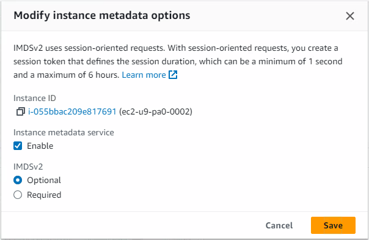

AWS curl to 169.254.169.254 failing, 401 Unauthorized
Scenario
As part of my simple bash script to automate AMI creation in EC2, using AWS CLI, a call is made to the ‘special IP address’ 169.254.169.254 to retrieve the Instance ID for the current EC2 server.
This Instance ID is required in the create-image command I am using, as below, but you may have your own scenarios for using metadata provided by 169.254.169.254.
aws ec2 create-image --instance-id $(curl -s http://169.254.169.254/latest/meta-data/instance-id) --name "Test_Image" --description "This is a test" --no-reboot
Recently, the above command stopped working. I narrowed the issue down to the curl request failing and therefore setting a blank variable.
On running the curl command on it’s own, with -v for verbosity, the following error was observed;
user@ec2server # curl -v http://169.254.169.254/latest/meta-data/instance-id
* About to connect() to 169.254.169.254 port 80 (#0)
* Trying 169.254.169.254...
* Connected to 169.254.169.254 (169.254.169.254) port 80 (#0)
> GET /latest/meta-data/instance-id HTTP/1.1
> User-Agent: curl/7.29.0
> Host: 169.254.169.254
> Accept: */*
>
< HTTP/1.1 401 Unauthorized
< Content-Length: 0
< Date: *
< Server: EC2ws
< Connection: close
< Content-Type: text/plain
<
* Closing connection 0
As you can see, a connection is successfully made, but is immediately closed with a 401 Unauthorized after attempting a GET.
This points to what the problem is; the GET request is attempting to authenticate with a IMDSv2 token and create a session.
We didn’t give it a token, hence the failure.
Resolution
Our issue stems from the fact that the command we used is for IMDSv1 (Instance Metadata Service), and the EC2 instance is configured to only accept IMDSv2.
We can see this setting via the AWS Console; EC2 > Instances > Select an instance (tickbox) > Actions > Instance Settings > Modify Instance Metadata Options

Setting IMDSv2 to Optional would resolve our issue, and allow the above command to run successfully.
But we don’t want to disable IMDSv2, as it’s more secure than v1. So, let’s generate a session token and use that in our curl command instead.
TOKEN=`curl -X PUT http://169.254.169.254/latest/api/token -H "X-aws-ec2-metadata-token-ttl-seconds: 600"` && curl -H "X-aws-ec2-metadata-token: $TOKEN -v http://169.254.169.254/latest/meta-data/instance-id
And, with that, we now have success;
user@ec2server # TOKEN=`curl -X PUT http://169.254.169.254/latest/api/token -H "X-aws-ec2-metadata-token-ttl-seconds: 600"` && curl -H "X-aws-ec2-metadata-token: $TOKEN -v http://169.254.169.254/latest/meta-data/instance-id
* About to connect() to 169.254.169.254 port 80 (#0)
* Trying 169.254.169.254...
* Connected to 169.254.169.254 (169.254.169.254) port 80 (#0)
> GET /latest/meta-data/instance-id HTTP/1.1
> User-Agent: curl/7.29.0
> Host: 169.254.169.254
> Accept: */*
> X-aws-ec2-metadata-token: <TOKEN APPEARS HERE>
>
< HTTP/1.1 200 OK
< X-Aws-Ec2-Metadata-Token-Ttl-Seconds: 600
< Content-Type: text/plain
< Accept-ranges: none
< Last-Modified: *
< Content-Length: 19
< Date: *
< Server: EC2ws
< Connection: close
<
* Closing connection 0
<INSTANCE ID GIVEN HERE>
Now we can use this successfully again, to automate creation of an EC2 AMI (a ‘snapshot’ of the server, including all EBS volumes), for the current server;
aws ec2 create-image --instance-id$(TOKEN=`curl -X PUT http://169.254.169.254/latest/api/token -H "X-aws-ec2-metadata-token-ttl-seconds: 600"` && curl -H "X-aws-ec2-metadata-token: $TOKEN -v http://169.254.169.254/latest/meta-data/instance-id) --name "automated_snapshot_$(date +%F-%H%M%S)_$(shuf -i 0-99999 -n 1)" --description "Image created from CLI" --no-reboot